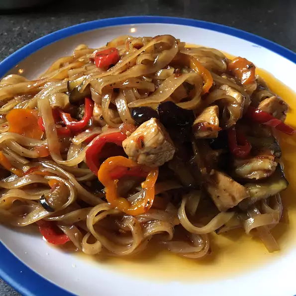

Pad Kee Mow (Drunkard's Noodles)

a stir fry noodle dish that is very popular in Thailand and found in most Thai restaurants.
Pad Kee Mow, or Drunkard's Noodles, is a popular Thai dish. It is my personal favorite when visiting any Thai restaurant. It is made differently by every cook. My girlfriend and I experimented to come up with this version. Feel free to make alterations to suit your own taste! Many ingredients (Thai basil, fish sauce, palm sugar, etc.) may be difficult to find in a regular supermarket, but you can most likely find them in an Asian market.
Ingredients
- ¼ cup rice vinegar
- ¼ cup fish sauce
- ½ small lime, juiced
- 1 tablespoon palm sugar
- 1 tablespoon red pepper flakes, or more to taste
- 1 teaspoon ground black pepper
- 2 skinless, boneless chicken breast halves, thinly sliced
- 1 (16 ounce) package fresh rice noodles
- warm water, as needed
- 3 tablespoons vegetable oil
- 4 cloves garlic, finely chopped
- ½ yellow onion, sliced
- ½ cup oyster sauce
- 2 tablespoons soy sauce
- 1 red bell pepper, sliced
- 2 small tomatoes, seeded and sliced
- 4 green onions, chopped
- 2 cups fresh Thai basil leaves
Steps
- Whisk together rice vinegar, fish sauce, lime juice, palm sugar, red pepper flakes, and black pepper in a large bowl
- Marinate chicken into rice vinegar mixture; set aside while preparing remaining ingredients.
- Separate rice noodles in warm water, about 5 minutes; drain.
- Heat the vegetable oil in a large skillet or wok over medium heat. Cook and stir the garlic and onion in the hot oil until the onion is soft and translucent, about 5 minutes.
- Increase heat to medium-high. Stir chicken and marinade into onion mixture; cook and stir until chicken is no longer pink in the center and sauce begins to thicken, 7 to 10 minutes.
- Stir rice noodles, oyster sauce, soy sauce, red bell pepper, tomatoes, green onion, and basil leaves into the chicken mixture; cook and stir until sauce is evenly distributed and noodles are tender, 5 minutes more.